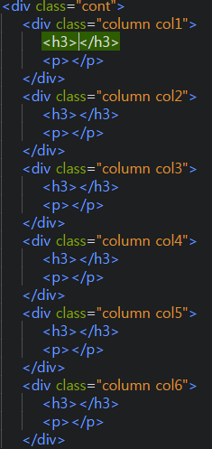

2020.03.11
브라켓 확장기능
- Emmet : 단축키
- Custum Work : 상단에 탭 메뉴 기능
- Beauty : 코드 정렬
- Indect Guide : 코딩 라인 가이드
단축키
- 복사하기 : Ctrl+ C
- 전체 복사하기 : Ctrl+ A
- 4칸 이동하기 : Tab
- 4칸 반대로 이동하기 : Shift+Tab
- ul>li*숫자치고 Tab누르면 복붙안해도 된다.
2020.03.12
코딩
- a href링크는 클릭하면 넘어가지는 것
- lang : 언어
- div + Tab : 박스형태
- Ctrl + D : 줄복사
- 이름 div 뛰고 id 엔터 안나오면 Ctrl + 스페이스 바
- height = 화면 설정 픽셀 값
- 닷홈은 https 에서 s 빼주기
- 코딩 언어
- Float을 사용하면 Height를 인식을 못하는 버그가 생긴다. (똑같이 Float을 사용하면 적용된다.)
포토샵
- 새로운 파일 : Ctrl + N
- 저장 : Ctrl + Shift + S
- 변형 : Ctrl + T (변형 후 Shift 눌러서 작업하기)
- 뒤로가기 : Ctrl + Z
- 이미지 사이즈 : Alt + Ctrl + I
- 사용가능한 무료 이미지
- 이미지 다수로 나누기 : 이미지를 다수로 가져와서 Window -> Arrange -> 나누고싶은갯수로 나누기
- 환경 설정 : Ctrl + K
- 최적화 확인 : F8 + 패널 옵션에서 Efficiency 체크해주기 컴퓨터 다운될 수 도있음
- 색상 선택하기 좋은 페이지(부가설명: 컬러창에 들어가서 #부분에 원하는 생상 복붙하면 그색상이 들어가짐)
- 사각형 - Shift 누르면 정사각형
- 크기 변경하기 : Ctlr + T
- 무료 폰트샵
- 전경색 바꾸기 : Alt + Delete
- Ctrl + O에서 Ctrl 누르면 여러가지 사진들 불러오기 가능
- Layers 클리핑마스크 되있는 것은 Ctrl 하면 동시에 움직이기 가능
- 3D 디자인
- Surfit, Muzli 크롬에 설치하기
- Ctrl + 사진 클릭 :글씨영역만 선택가능
- Ctrl + U : 색체감 설정 가능
- Ctrl + 이미지를 클릭하고 레이업마스크를 하면 그 이미지만 빼고 전경색으로 바뀐다
- Ctrl + 1 : 100% 이미지가 된다.
2020.03.13
레이아웃
! -> Tap 기본 HTML틀이 작성됨(EMMET기능)
- 레이아웃 공부방
- EntityCode를 사용하면 사이트에 기호 언어 사용 가능하다.
- Float을 사용하면 Height를 인식을 못하는 버그가 생긴다. (똑같이 Float을 사용하면 적용된다.)
- Float으로 적용된 버그는 Clear를 사용하면 버그가 사라진다. 단 간편한 레이어일 경우 사용한다.
2020.03.16
포토샵
- 책 132쪽 (레이어 스타일을 적용하고 복사하여 다른 레이어에 적용하기)
- 책 285쪽 (Tilt-Shift)와 (Smart Sharpen) 필터 적용하기
- Ctrl + Shift + I : 선택된 영역의 반대를 설정
- Ctrl + Shift + U : 전체화면 흑백으로 변환
코딩
- Emmet 단축키를 알려주는 사이트
- ul은 점 ol은 숫자
- Shift + Home : 앞줄 전체 선택
- Shift + End : 뒷줄 전체 선택
- Ctrl + D : 그 줄 복사
- bgc + Tab : background - color
- CSS 명령어 게임
2020.03.17
공부
- 우수한 사이트 찾기
- Web Developer, 구글 번역 , Full page screen capture (크롬에 설치하기)
- Full page screen capture 이미지 카피할때 전체화면으로 카피하기
- ex) #header-wrap 을 쓰면 헤더라인 뒷배경을 칭한다
- CSS로 id 속성의 속성값을 언급할 경우에는 #, class 속성의 속성값을 언급할 경우에는 .를 사용
- Full page screen capture 로 카피하고 포토샵에서 가이드라인 잡으면 쉽게 코딩작업을 할 수 있다.
- ex) background : rgba(숫자,숫자,숫자,숫자,숫자)를 넣으면 색상이 나온다.
- inherit 는 상속되어 코드를 재사용 한다.
2020.03.18
공부
코딩
- table은 th 제목 td는
- rowspan 은 줄을 합쳐주는 것
rowspan을 활용해주었으면 안써져있는 줄은 지워주지 않으면 표가 깨지는 현상이 일어난다. - CS(국가직무능력표준)은 국가직무능력표준(NCS, National Competency Standards)은 산업현장에서 직무를 수행하기 위해 요구되는지식·기술·태도 등의 내용을 국가가 체계화한 것입니다.
- NCS 홈페이지에서 전공교과 공부 가능
- 모바일 앱 만드는 사이트(브라우저에서도 잘 활용할수있음)
- 에이전시를 들어가려면 sketch나 adobe xd를 활용 할 수있는 능력이 되야함
- rowspan을 사용하고 글씨를 가운데로 맞추고싶으면 class를 사용하고 ce= 센터(가로) va=세로 를 의미한다.
- <br>를 사용하면 두줄로 나눌수있음
- 티스토리 사이트를 가면 코딩이 가능함
- figma를 사용하면 모바일 웹사이트를 제작할 수 있다.
- 레이어가 잠겨있으면 필터를 적용 할 수 없다.
- Ctrl + U : Hue/Sacturaion (색깔)
- 모형을 반전시킬려면 그 형태 (Ctrl+ T)를 선택하고 우클릭 후 Flip Horizontal 을 눌러준다.
- 시험 볼 때 Magic wand tool 을 사용하면 금방 포토샵가능 (단점 : 단순한 것 만 가능)
- 글자 휘어짐 : 글씨 쓰는 T를 누르면 상단쪽에 생김
포토샵
blend mode : 배경과 이미지 효과를 바꿔준다.
그라데이션 효과를 넣어줄때 사용
투명도 설정
배경색 지워줄 때 : 펜툴로 이미지를 정해준 뒤 Ctrl + Shift + I 후
Delete
2020.03.19
공부
- 취업을 하면 코딩이 더욱 복잡해지기 때문에 주석표시를 실용적으로 써주는게 좋다.
코딩
- 코딩 명령어 +는 친구를 생성해준다.
- active 는 옛날 버전에는 적용이 안되는 경우가 있다.
- <caption>은 시각장애우들을 위해 써야하는 언어이다.
- text-decoration : none; : 클릭 링크에서 밑줄을 사라지게해준다.
- link 코드에서 rel = relation (관계)를 의미한다.
- colspan = 가로를 합쳐준다.
- skip : 다음 섹션으로 건너 뛸 때 사용해준다.(웹 표준성 준수 할 때)
- border는 테두리 줄색깔이다. 사방으로 테두리 줄 색깔을 주고 싶으면 bottom만 지우면 가능하다. 한꺼번에 사용 할 때는 세미클론(;)을 사용하면 안된다.
일러스트
- Ctrl + K : 새창열기
- 일러스트는 줄이 완성되야지만 코드를 불러올수있다.
- Ctrl + K : 후 Scale Strockes & Effects 를 누르면 줄이면 굵기도 같이 조절이된다.
2020.03.20
공부
코딩
decoration: 밑줄의 색상을 변경hove: 마우스를 오버했을 때 색상을 변경- ../ : 그 전 폴더로 가서 다른 이미지를 끌어 올 수 있음
border: 테두리에 색을 주는 것solid라인- 드래그를 하고 Ctrl + / 를 누르면 드래그한 부분 주석표시 가능
- 헤더부분 작업코딩
- display : inline 을 썻을경우 text-align이 적용되지않으면 블록구조가아니라 전체영역으로 넣어주면 적용된다.
- block을 쓰고 세로로 되었을 때 인라인을 붙혀주면 가로로 가능하다.
- 코딩 언어 설명
2020.03.23
공부
- 다음 웹표준 사이트
- 네이버 웹표준 사이트
- 이미지 스프라이트를 이용하면 대체문자를 표현할 수 없게되는데 대체문자를 표현할려면 IR효과를 사용해야 한다.
- 100%값을 맞추기 위해서 마지막 자식의 값을 넣어 줄 때
- 3D 이미지 모델링
- 선생님이 정리하신 요소들
2020.03.24
공부
- relative : 기준점을 설정해주는 값
- 단축
- 결과
- aria-hidden : 웹 접근성(시각장애우)을 위해서 쓰이는 코드이다.
2020.04.06
공부
- translate는 요소를 지정한 위치로 X 또는 Y축만큼 이동 시킵니다.
- em태그는 상위박스의 폰트사이즈를 가져오는 것
2020.04.13
공부
- 웹디자인 기능사 시험지
- display: flex(가로) : 바로 친자식만 설정값을 정해줄때 사용
- display: grid(세로) : 바로 친자식만 설정값을 정해줄때 사용
- 그리드 정석법
2020.04.14
공부
- perspective : 선택한 요소의 원근점 거리를 설정합니다.
- Array : 배열 (배열이란? 한개의 변수에 여러 개의 값을 순차적으로 저장할 때 사용한다.)
2020.04.16
공부
- height 100%는 인식못하고 100vh는 100등분을해서 인식할 수 있음